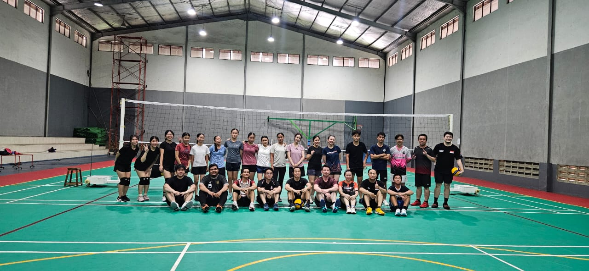

Pengalaman saya dalam mewujudkan SDG 3
Saya bersama orang lain dengan rentang usia dari remaja sampai dewasa latihan voli bersama. Voli merupakan sebuah olahraga yang dapat meningkatkan kesehatan jantung dan membantu membakar kalori. Walaupun mereka sudah tua, mereka tetap bisa berpartisipasi dalam latihan kami dan kami sparing melawan orang yang jauh lebih tua dari kami. Ini dapat mewujudkan SDG 3 karena walaupun kami mudah maupun tua, kami tetap bisa latihan bersama dan meningkat kualitas hidup serta kesehatan kami.
